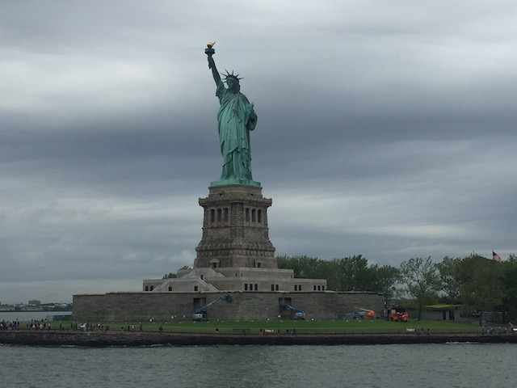
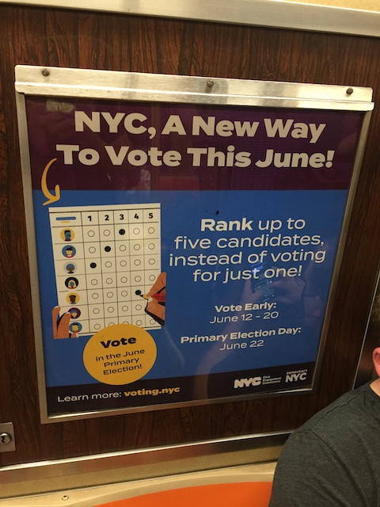

| |
East Coast Trip 2021
Lake Compounce Six Flags New England New York City American Dream Coney Island Six Flags Great Adventure
Casino Pier & Playland's Castaway Cove Dorney Park Cedar Point Kings Island Columbus Zoo & Waldameer Kennywood
Idlewild & Lakemont Park Hersheypark Knoebels

All right. Time for our first day in New York City on this trip. And hey. Nothing screams NYC more than bagels. So yeah. We're here at some random NYC Bagel Shop.
Must resist the urge to spout my criticism of the New York Times.
I normally don't eat bagels very often, but the ones in New York really are bitching. Giant thumbs up from me. =)
Why is water falling from the sky? This doesn't happen back home in Southern California.
All right. Time for us to get on a boat!
It's not New York City without coming across countless skyscrapers.
 No. Clinton Castle is not a National Park, but it is true that this city is just dripping with American History.
No. Clinton Castle is not a National Park, but it is true that this city is just dripping with American History.
*Sigh* I just love TSA-style Security Theater measures. Especially when they leave the airport and extend into other areas of life.
Can anyone tell me. Is that statue famous?
Yeah. We're gonna be total tourists today. But hey. It's good to be seeing some culture.
Surprise trip to Europe everyone! Hope you brought enough food and supplies to last the journey across the Atlantic Ocean. >=)
 Mary Poppins is NOT pleased to hear this.
Mary Poppins is NOT pleased to hear this.
Pff. What do you mean you didn't know that those giant blocks of concrete was a World War II monument? Loser!
It's not America without a bigass statue of a bald eagle. =)
Hey New World Trade Center. How's it going?
Fun fact. We were originally just planning on spending the morning quickly at the Statue of Liberty and then spend the rest of the day at Coney Island. However, Coney Island didn't open today thanks to the rain this morning. However, we left the NYC portion of the trip without a strict official schedule (something that worked out beautifully in Japan), and once again, this worked out so well as now we could just do Coney Island on Wednesday and do our NYC Sight-Seeing day today. And now we'll have more time here. =)
Getting to check off a historical landmark off my list.
The famous poem frequently attributed to the Statue of Liberty is nice and all, but.....sadly so false.
Yay! We made it to Liberty Island, AKA the Statue of Liberty!
Please don't research this any further. We want you to believe the fairy tale you learned in Elementary School.
 List of people and companies paying lip service to the stuff the Statue of Liberty pretends to care about to boost their own social standing.
List of people and companies paying lip service to the stuff the Statue of Liberty pretends to care about to boost their own social standing.
Hello. I'm the guy who designed the Statue of Liberty! Give me some respect!
Some of the replicas paying homage to one of New York's most famous landmarks (or is it actually in New Jersey? A surprisingly difficult and interesting question.)
I'm sorry. But I can not think of the amputated Statue of Liberty's foot without thinking of Family Guy.
Various corporate mascots appropriating the Statue of Liberty to gain patriotism brownie points. ;)
Might as well sew a bald eagle on there to make it even more AMERICAN!!!
So the Statue of Liberty originally had a different torch, but they couldn't maintain it. So.....now it's preserved here.
If you want more information on the original torch from the Statue of Liberty.
So Liberty Island was cool. Aside from seeing the statue itself, you learn all the standard stuff (It was a gift from France, It's made of copper and is only the color you all recognize because it's actually rusted as f*ck, etc.) and just various things about the Standard American Fairy Tale they teach in Elementary School. Clearly, the giant head behind me is also not amused at the whitewashing of history.
Some of the copper used in the Statue of Liberty.
Just in case the terrorists try and attack the Statue of Liberty. ;)
For those of you wanting a close up view of Lady Liberty.
I'd welcome you to America, but as you'll soon learn on Ellis Island, I didn't do that nearly as often as you think I did.
Just a quick reminder that the idiot Anti-Mask Anti-Vaxxers are the ones who cloak themselves in freedom, liberty, and patriotism the most.
That's enough Statue of Liberty. Back on the boat everyone!
Time for us to immigrate to America (despite all of us being natural-born citizens).
Yeah. Now we're here at Ellis Island. Thanks to Coney Island being cancelled, we can really explore this place in full detail.
Liberty Island may be the whitewashed Elementary School approved history lesson, but Ellis Island will actually teach you some things including some aspects of America's dark sh*tty past that many people like to ignore.
Before the White people came to this land.
Needless to say, the immigrants did not come here on luxurious cruise ships.
Hey. At least the immigrants didn't have to deal with TSA bullsh*t once they arrived. That's a silver lining.
Yeah. My High School never taught me this, and I only learned about this thanks to me taking an Asian American Studies course in college. Gee, I wonder if our Educational System has a problem.
For the idiots who try to argue that America doesn't have a racist past, this is for you.
Yeah. Anti-Irish Bigotry was a thing in the 1800s (though still not NEARLY as bad as the bigotry against POC). Cleary these assholes never went to a St. Patricks Day party.
This is where people came coming from. This is where we must build the walls.
I don't want to have to live in a world where looking up will always cause me to look at Uncle Sam's crotch.
The more accurate version of the famous poem on the Statue of Liberty.
Am I crazy for thinking this looks like it's from one of Charlie Chaplin's early silent films?
"This is payback for those smallpox blankets and that genocide, bitch!"
Random photo of people dressing like American icons.
Bah! Screw that whole immigration process and the giant headache of getting a green card. Wanna be a citizen? Just draw me a f*cking diamond! ;)
Stepping away from history for a second, I have to admit that the Ellis Island building is actually really nice. Big thumbs up for the arcitecture.
Push factors being that your home country is sh*t and you gotta get the f*ck out of there. Pull factors being "Wow. This other country looks like it kicks ass! I wanna live there!". Got it?
Planes. It's the 21st Century People. Get real.
And of course, the bigotry and anti-immigration sentiment still goes on to this day.
OK. Back to the mainland with the giant concrete WWII memorial.
Crap! It's been too long since we've shown a roller coaster on this roller coaster website! Show one now! Or any sort of amusement park ride you could build in RCT!
Ooh. Having the carousel themed to sea creatures is really cool. Always good to see themes aside from the standard horses theme.
Cool. But again, not worth the time or money when I can just ride a carousel at so many of the parks on this trip.
*Sigh* Which one of you idiots went and caught COVID?
Hello topless statue! It's OK! It's not lewd or crude! It's culture! =P
Yet another cool museum I want to explore on a future trip to NYC.
Oh boy. We're at my favorite place in the world.
How many people have been f*cked by that bull?
No. This isn't a tribute to 9/11. This random Locksmith shop's logo is just REALLY out of date. Bro, I've got some bad news to share with you.
We may not have been able to Scott's Pizza Tour this trip due to the dates it fell on, but it wouldn't be a trip to New York City without some New York Pizza. So yeah. We had to stop and get some for lunch. And one of Scott & Steve's friends recommend this place, which just happened to be right by where we were today.
 Damn. This place was good. REALLY F*CKING GOOD!!! Now this is the NYC Pizza I always rave about. =)
Damn. This place was good. REALLY F*CKING GOOD!!! Now this is the NYC Pizza I always rave about. =)
All right. Time for some dark tourism. We've done that multiple times before.
Grafitti right around the New World Trade Center. Hey, at least there's some fun stuff in there and it's not just tragedy porn.
So I'm old enough to remember 9/11, but was too young to really understand what was happening, since....I was 9 at the time. I was never shown any of the constant news coverage, and never saw Flight 175 fly into the South Tower. So when I was told "Two planes flew into the World Trade Center", I was thinking those old-school small planes, not a passenger plane. And I assumed that this was property damage and vandalism of a major American landmark, not terrorism where 3,000 people died. So when school excused everyone for mourning the event, I was all "Oh boy! Bonus recess! Why is everyone so sad?", and also said something foolishly ignorant, along the lines "Oh, the police will arrest the man who did this. And this is over in New York. Not here. Let's play now". I also remember everyone being super paranoid and extra panicy, and thinking to myself "Why is everyone so paranoid?", remembering some incident where a giant traffic jam occured because.....I think some cherries or something spilled onto the freeway, and people were afraid it might be a bomb.
Didn't explore the museum, just saw the memorial of the reflection pools in the spots of the original towers. But hey. Another trip to NYC.
One giant skyscraper down. One more to go. Remember, TWO planes flew into TWO towers.
Having a giant mall to buy useless sh*t right next to the memorial of one of your countries biggest tragedies is somehow, the most American thing I can think of.
 I know just how much you want to go explore the Moma Museum Scott. ;)
I know just how much you want to go explore the Moma Museum Scott. ;)
All right. Time for our tall building of the trip.
And this time, we decided to go up to the top of the Rockefeller Center.
Why this one? Why not the obviously more famous Empire State Building, or another famous building, like the Chrysler Building or the New World Trade Center?
 Ooh. Pretty Giant Chandelier.
Ooh. Pretty Giant Chandelier.
OK. Not gonna lie. This elevator is f*cking badass. Never thought I'd be raving about the elevator from the Rockefeller Center.
The Rockefeller Center may not be New York's most famous building, but it is the place to get the best views of all of New York's most famous buildings.
See look! There's the Empire State Building.
It may not be quite as amazing as it was in 2011 after having traveled to so many places since then, but the sheer amount of skyscrapers in NYC is still impressive.
Standard tourist photo.
Way to help with the environment or does some rich asshole who lives in a skyscraper just want a yard?
Hmm. Not familiar with any of these skyscrapers. I wonder what these places are? Bah, too lazy to Google it.
Yeah. The views up here are really freaking good.
Really wish someone was up here with me (Oh, and you can tell that it's June BTW. Corporations don't care the other 11 months of the year lol).
Hey Steve. Tell me again just how much you love the "I Heart NY" merchandise. >=)
This fountain may not be famous or anything, but it does look nice.
Honestly, after seeing Shibuya Square in the heart of downtown Tokyo, Times Square can't hold a candle to it. Though let's be real. I wasn't a fan of Times Square, even before my Japan Trip.
Hey! Minnie Statue of Liberty! Get back on Liberty Island with the rest of Corporate America's takes on Lady Liberty!
 So I wound up paying $2 for this random CD, before I realized that this was most likely a scam. Also, even if it's not, I don't give a flying f*ck about this guys music. Just upload that sh*t to Youtube dude. Yeah. I'm an idiot. I want mt $2 back! But at least it was only $2. It's the equivelant of losing a Coke. No big deal. And no, I have yet to listen to this stranger's music. Still buried somewhere in my closet.
So I wound up paying $2 for this random CD, before I realized that this was most likely a scam. Also, even if it's not, I don't give a flying f*ck about this guys music. Just upload that sh*t to Youtube dude. Yeah. I'm an idiot. I want mt $2 back! But at least it was only $2. It's the equivelant of losing a Coke. No big deal. And no, I have yet to listen to this stranger's music. Still buried somewhere in my closet.
Keep this in mind. Gonna need to know this for when we visit Coney Island on Wednesday.

YES!!! PLEASE ROLL THIS OUT NATIONWIDE!!! I'd LOVE to actually be able to vote my concious and not CONSTANTLY have to vote for a lesser evil that I despise because the alternative is everything I hate about the people I'm voting for, plus psychotic homophobic racist anti-science pro-disease planet-dooming fascists as well. It's a f*cking CRIME that Maine and Alaska are the only two states to have Ranked-Choice Voting.
Gotta find some place for dinner that's both nice, and not break-the-bank expensive as well. This seems like it strikes a good balance.
It was a nice resteraunt with good food. But the highlight of the dinner was the debate I had with Scott about literature (Mrs. Dalloway sucks and I will defend that opinion to the death!)
No.
So we decided to close out the night at Stonewall since....three of the four of us are LGBT (including yours truly. Bisexuals! We exist god damn it!). So naturally, it seemed fitting to see the birthplace of the LGBT Rights Movement, and a prominent peice of gay history.
Now I am NOT a bar person. I almost NEVER go to them, usually only going to one bar in L.A a couple times a year for the fun events that they throw. But hey. We're gonna have fun here.
It's OK that this crappy beer is nearly $10 because it's a gay beer. =)
While not the first time I've made a drunken fool of myself on a trip. This time is different. I'm not just drinking for the sake of having fun. I'm celebrating my sexuality and gay history! Now hand my drunken ass another shot lol!
American Dream
|